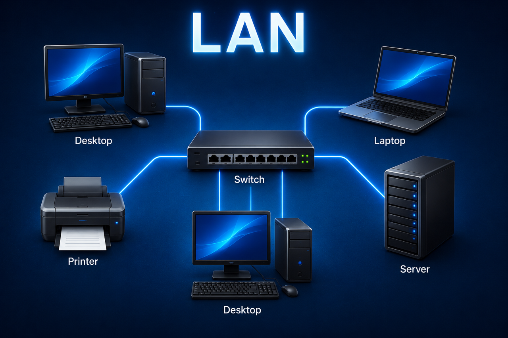

A Local Area Network connects devices within a limited area, such as a room,
building, office, school or military site.

Tap the devices in the diagram to explore the LAN.
What is a LAN?
A LAN is a network that connects devices over a small geographical area.
It normally uses switches, cabling, wireless access points and sometimes servers.
Benefits of a LAN
Fast communication between local devices.
Allows shared access to files, printers and services.
Can be easier to manage and secure than a wider network.
Supports centralised control of users and resources.
Limitations of a LAN
Limited to a small geographical area.
Requires infrastructure such as cabling, switches and cabinets.
If key equipment fails, users may lose access to services.
Poor design can cause congestion, faults or security issues.
RAF/AES Example
In an RAF training environment, a LAN could connect classroom computers,
instructor workstations, printers, servers and network equipment within the same building.
For Communication Infrastructure Technicians, understanding LANs is important because
cabling, patching, switches, cabinets and network services all depend on good network design.
Quick Check
Question: Which device is acting as the central connection point in this LAN?
✅ Correct. The switch is the central connection point in this LAN diagram.
❌ Not quite. In this diagram, the switch is the central device connecting the other equipment.
Optional AR / 3D Area
This section is ready for the next upgrade. Later, we can add a free 3D model here
so students can rotate it or view it in AR on supported phones.
TP6 Networks | Scan, explore, answer, move to the next topology.